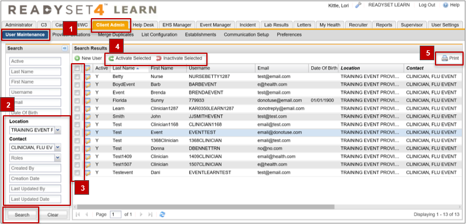

ReadySet allows authorized Client Admin users to batch modify user status from active (the ability to login to ReadySet with a defined username) to inactive (removing the ability to login to ReadySet), and vice-versa. This will save you time activating your flu crew users at the beginning of the season and inactivating flu crew users at the end of the season.
This feature is located in Client Admin > User Maintenance.

Active – list users by current status of active or inactive.
Location – list all users associated with the Clinic Location you have selected. e.g. Flu Event Clinic.
Contact – list all users associated with the Clinic Calendar you have selected. e.g. Flu Event
Roles – list all users associated with the Role you have selected. e.g. Event Reviewer or EHS Manager.
It is important to carefully review the list of users before you activate/inactivate to ensure you are not updating a user status incorrectly. If you accidently change the status on a user, you can repeat the steps above to change the user status.
You can only Activate/Inactivate one page at a time. This prevents you from accidently changing the status on users that you have not verified on subsequent pages. If your list of users exceeds one page, complete the steps above and then click to the next page and repeat.
The user may have more than one roles associated with their user. Take care to ensure you are not inactivating a user who has multiple roles and still requires access.